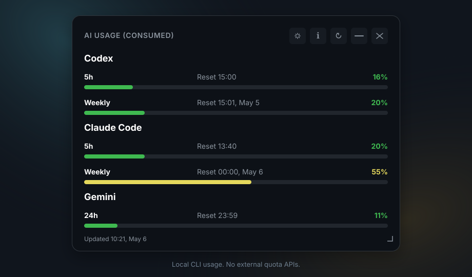

No APIs
Usage data comes from local provider CLIs, not remote quota services.
Local-first desktop usage monitor
A compact always-on-top widget for Codex, Claude Code, and Gemini CLI usage on Windows, Ubuntu Desktop, and macOS. It stays local, warns before quotas get tight, and can be recovered from the tray when monitor layouts change.

Usage data comes from local provider CLIs, not remote quota services.
The widget does not collect tokens, API keys, or provider account secrets.
Codex, Claude Code, and Gemini are detected through platform-native CLI lookup.
Tauri bundles target Windows, Ubuntu Desktop, and macOS.
The tray icon follows the highest visible usage level, moving through green, yellow, orange, and red as consumption rises.
Optional local chimes warn once when a visible provider crosses the 75% and 90% usage thresholds.
Check GitHub Releases from the About panel and open the release page to download the installer that matches your platform.
Launching the app again focuses the existing widget instead of creating duplicate windows and tray icons.
A Center action brings the widget back to a visible monitor after docking, undocking, or display changes.
Footer and weekly reset labels include compact time and day information, so stale readings are easier to spot.
npm ci
npm run tauri:devInstall Node.js 20+, Rust, and at least one supported provider CLI for real data.